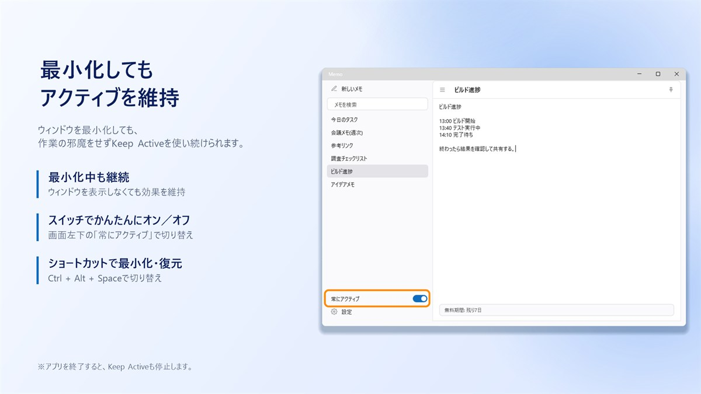
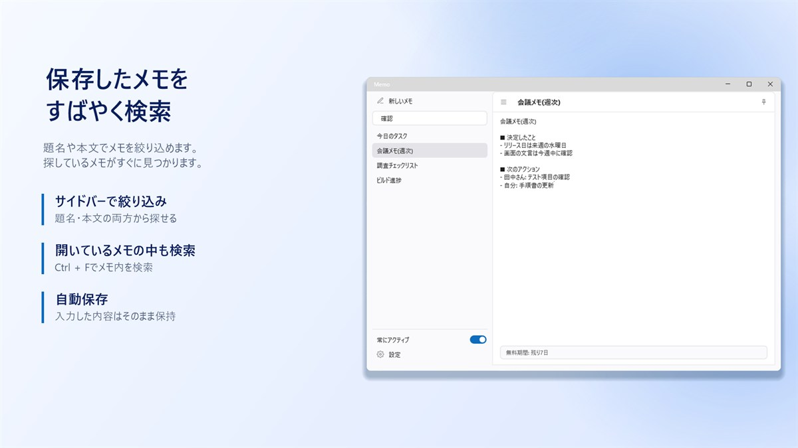
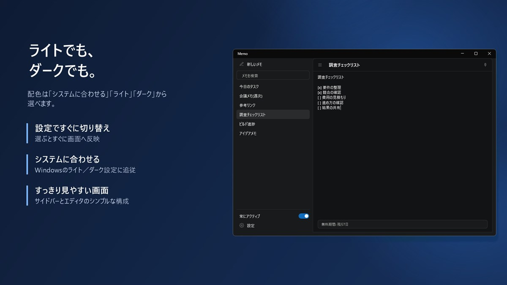
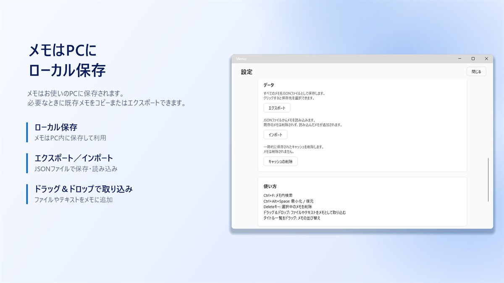
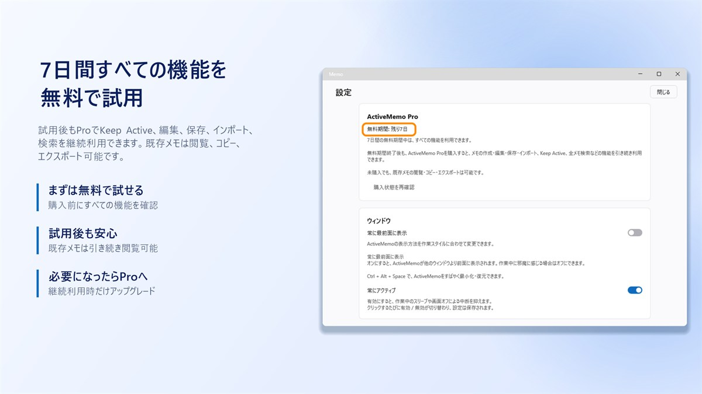

Keep Active
PCをアクティブな状態に保ち、スリープや画面オフによる中断を減らします。アプリを最小化している間も続き、画面左下のスイッチでいつでもオン／オフできます。

3.0で画面を一新
ActiveMemoは、無操作中のPCをアクティブに保つKeep Activeと、メモの一覧・エディタ・検索をまとめたWindowsアプリです。3.0では、サイドバーのメモ一覧とエディタを並べたすっきりした画面になり、ライト／ダークの配色にも対応しました。
PCをアクティブな状態に保ち、スリープや画面オフによる中断を減らします。アプリを最小化している間も続き、画面左下のスイッチでいつでもオン／オフできます。
チェックリスト、参考リンク、作業の途中経過を自動保存で残せます。ピン留め、ドラッグでの並べ替え、ファイルやテキストのドラッグ＆ドロップ取り込みにも対応しています。
題名・本文でメモを絞り込み、Ctrl + Fで開いているメモの中も検索できます。配色は「システムに合わせる」「ライト」「ダーク」から選べます。
実際の画面です（メモの内容はサンプルです）。

無操作中のPCをアクティブに保ちながら、作業メモをすぐに残せます。開発者の利用環境では、数時間マウスやキーボードを操作しない状態でも、Teamsの緑表示が続くことを確認しています。

Keep Activeは最小化中も続きます。アプリを起動するとオンで始まり、Ctrl + Alt + Spaceでウィンドウを最小化・復元できます。

サイドバーで題名・本文からメモを絞り込めます。Ctrl + Fで開いているメモの中も検索でき、入力内容は自動保存されます。

配色は「システムに合わせる」「ライト」「ダーク」から選べます。表示言語は日本語とEnglishを切り替えられ、ウィンドウの位置と大きさは次回起動時に復元されます。

メモはお使いのPC内に保存され、メモの利用にクラウドアカウントは不要です。JSONファイルでのエクスポート／インポートにも対応しています。
ご利用前に
ローカル保存
メモ本文を開発者のサーバーへ送ることはありません。必要なときはテキストをコピーしたり、メモをエクスポートしたりできます。詳しい扱いはアプリ別のプライバシーポリシーで確認できます。
無料試用とPro
初回起動から7日間は、すべての機能を使えます。お使いの環境でKeep Activeの動きやメモの使い心地を確かめてから、購入を決められます。
毎日使うなら、ActiveMemo Proで、Keep Active、メモの作成・編集・保存、インポート、メモ検索を続けて使えます。Proにしない場合も、今あるメモの閲覧・コピー・エクスポートはそのまま使えます。
使い方や、試すときのポイントをnoteで紹介しています。
探している内容に合わせて、読みたいページを選べます。

Microsoft StoreからActiveMemoをインストールすると、7日間の無料試用が始まります。
7日間無料で試す（Microsoft Store）